Drawn straight from the text below. Nobody chose the placement or the routing.
Why diagrams rot
The architecture changes → updating the diagram is a chore → nobody updates it →
the diagram is now a lie → nobody looks at diagrams any more.
Existing drawing tools are finished products for drawing the first version. There is no point
competing there. zumen is aimed at the rot, not at the blank page.
What it can draw
Not only servers and networks. Transit maps and train timetables, floor plans and
framing plans, piping and switchgear, periodontal charts, fishing rigs, theatrical lighting
plots, vehicle damage reports, container stowage, fireworks safety distances —
if a drawing says “what connects to what”, “in which order”, or “what is where”,
the same notation covers it. The samples below all come from the same eleven words of vocabulary. No
industry-specific shape packs were added: the expertise lives in the tags
(C1G12"-CS-101LBS-1), not in the shapes.
Architectural drawings carry grid lines and dimensions. Walls have thickness and
doors show their swing — you cannot build anything from a drawing without dimensions. Dimensions come out in millimetres, metres, or feet and inches — whichever the
drawing's own scale asks for.
Building and civil38
Exterior wall framing, in the order a framer builds itRoof framing: in plan a rafter is a lineDeck framing: a load path in seven partsAccessible toilet room: the drawing is made of clearancesTwo-story house plan in feet and inches, with OPEN TO BELOWEgress plan: three lengths answering three questionsSprinkler layout: area per head and spacing, decided togetherFire alarm devices: spacing is a circle, not a squareA lane closure is mostly road, not workA deed describes land as a walk, not a pictureNo dimensions on it - the field is the rulerNot a picture of the fire - the way out is written on itParking striping: the access aisle is not spare tarmacSite plan: the envelope is the lot with the yards taken outSeptic site plan: a plan decided by how fast water leaves the soilApartment plan
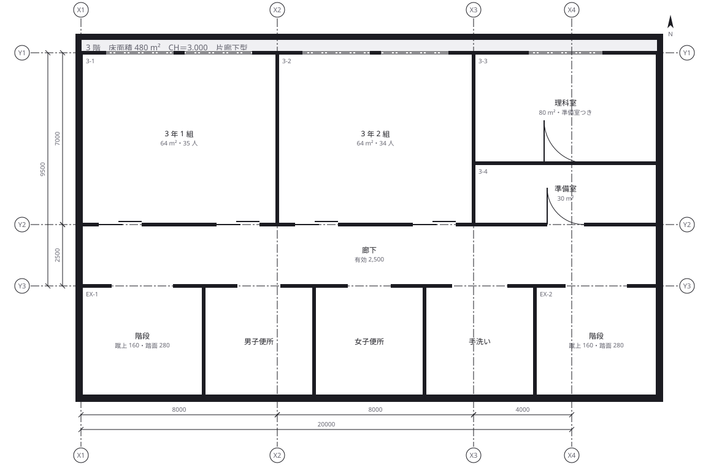
School floor plan (walls, door swings, grid lines, dimensions)An estate agent floor plan: made to decide with, not to build from
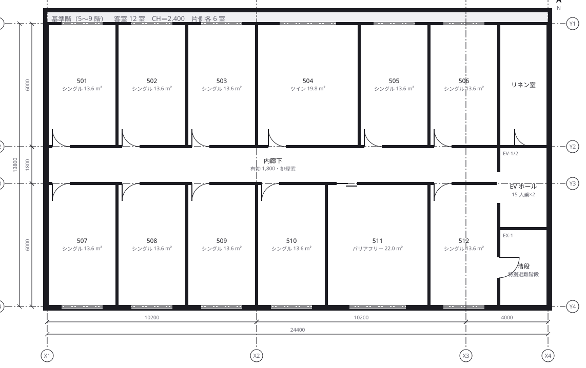
Hotel typical floor, twelve roomsBeam reinforcement: the last moment it can be changed is before the pourConcrete framing planReflected ceiling plan: you look up by drawing it looking downJapanese wall section, where seven heights are fixed at onceShelter layout: 3.5 sq m a person, and how many toiletsEscape routes, third floorExtinguishers and hose reels, measured two different ways
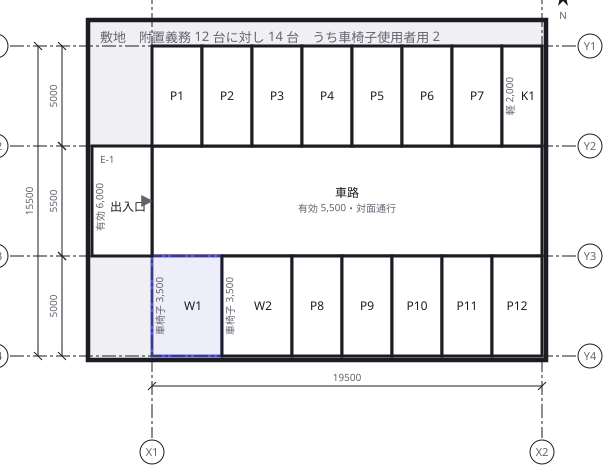
Parking layout, fourteen bays
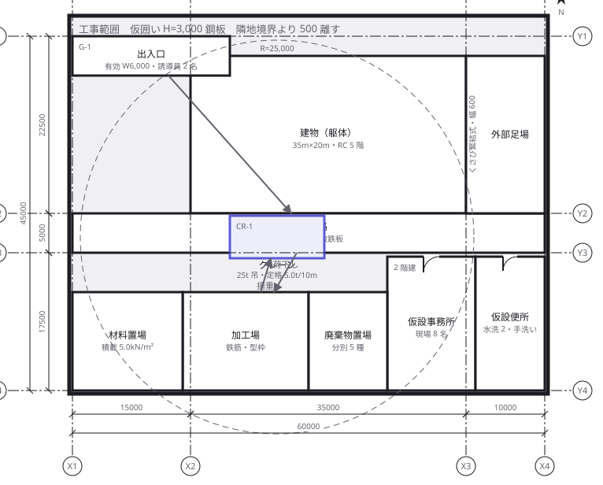
Site logistics plan with the crane radiusRope access work plan — the law says what the drawing must carry
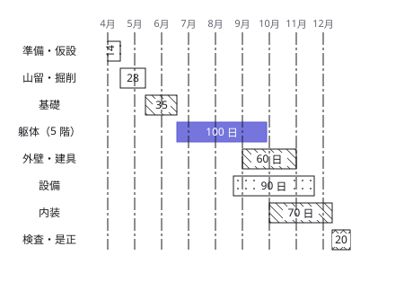
Construction bar chart
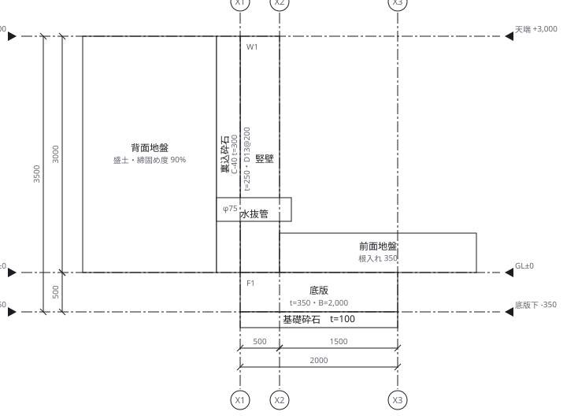
Retaining wall section
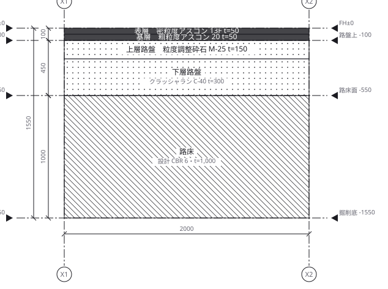
Pavement build-upTactile paving: bars mean go, dots mean stop
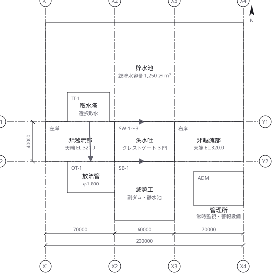
Gravity dam planJapanese map symbols: a circle around a sign makes it the senior one
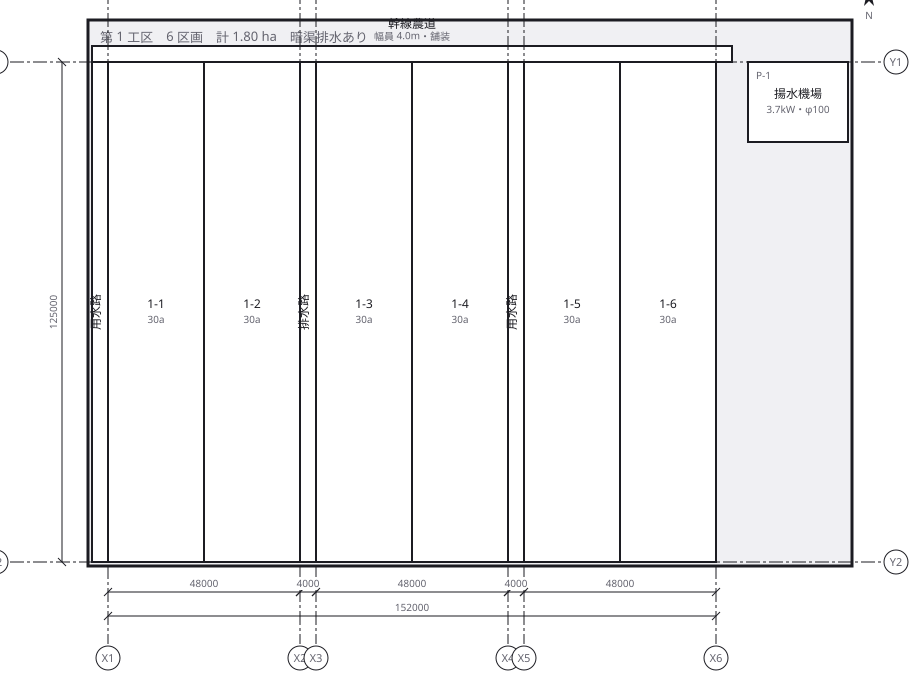
Farmland consolidation planTemple garden plan, drawn with closed curves
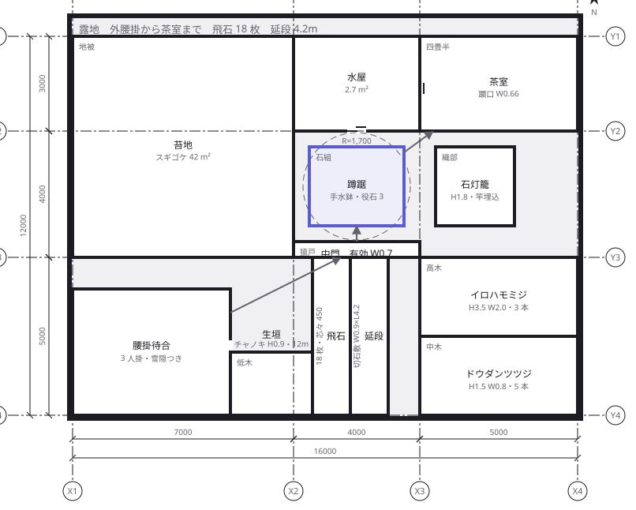
Tea garden path and planting
Services and electrical12
Ducts are sized by a pressure budget, not by the roomPanel schedule: the table is shaped like the panelPiping and instrumentation diagram
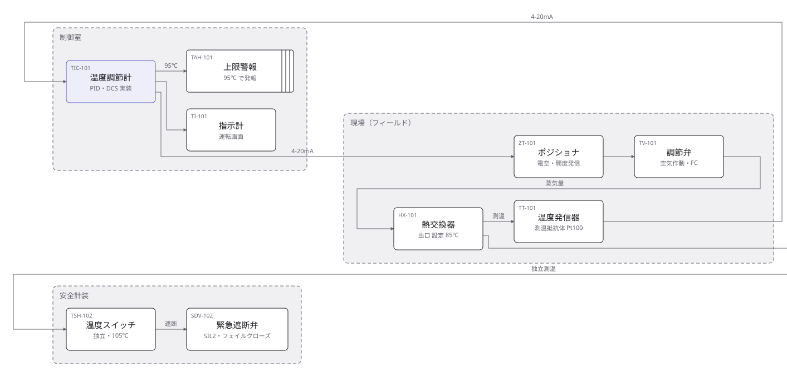
Instrument loop diagram (ISA tags)Substation single-line diagramThe circuit diagram taught at primary school: series and parallel
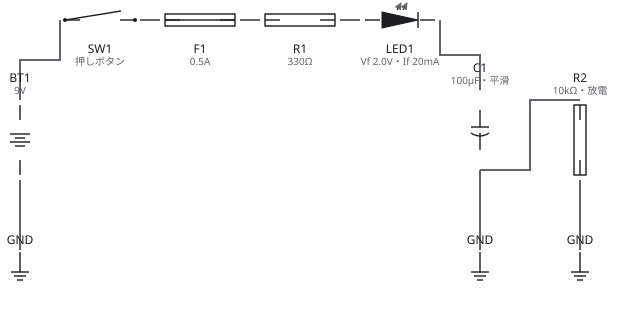
Electronic circuit (IEC symbols)House electrical layoutHouse water and drainageLand-based aquaculture: the water is cleaned, not replaced
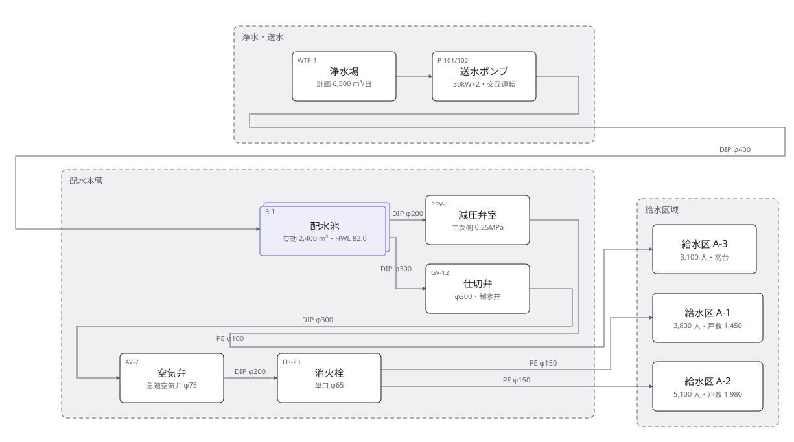
Water distribution network
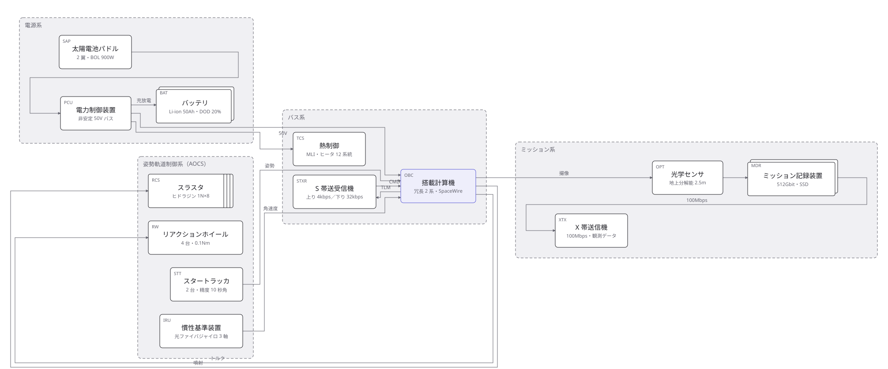
Satellite subsystems
Health, food and farming21
Every dimension comes from what cattle will not doRestorative chart: one number fixes a toothThree small grids decide the fourth - the cloth is computedPeriodontal chart, six points a tooth
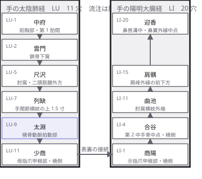
Meridians and points (WHO standard)
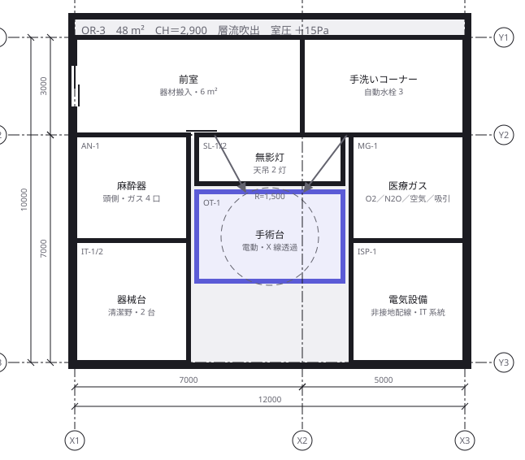
Operating room equipment layoutOutpatient flowNew year box: odd numbers, and no gapsBeef cutting chart: the bones decide the linesKitchen zones and one-way flow (HACCP)Allergen flow: never let the path double backIndustrial pattern: cloth cannot be uncutCutting layout: the pattern may not be turned
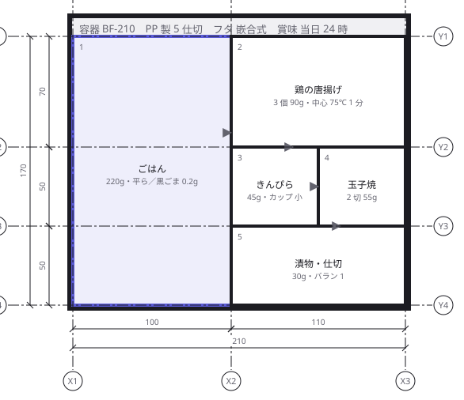
Bento packing instructionsHair colour sectioning: the order is the contentPest monitoring: the stations never moveHigh-density apple training, with tree and row spacingPruning instructions: not which branch, but where to cut itGill net: the mesh opens because the net is hung shortHive frames: reorder them and the brood goes coldFishing rig, six hooks
Retail and logistics17
Baseball infield: every distance starts at the apex of home platePallet rack: the truck decides the aisleShop layoutShopping street directory, trade by hatchFood court layoutYardage book: shade the surfaces, write the distancesStadium seating by price bandCamera coverage, out to the distance a face still reads
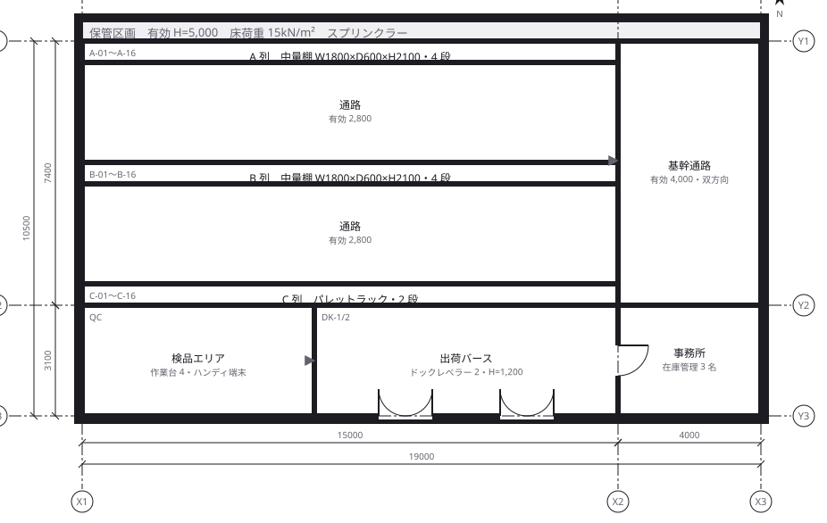
Warehouse location addressingMoving route: the drawing that says whether it fitsPallet patterns, and what they do to stabilityCrane lift plan: the further out, the less it liftsTruck loading: weight times distance from the axleContainer stowage: bay, row and tier are the addressGeneral arrangement: four drawings, each with its own scaleStock and reorderingAssembly line and inspection
Events and games19
A method is not a tune - it is a path through a gridA brick mosaic chart: the colour IS the instruction, so every cell also carries a codeA dartboard: the numbers are arranged to punish a missBilliards: the diamonds on the rails are a ruler, not decorationMahjong: the dice decide where the wall is opened, not luckOrchestra seating, two traditions side by sideDance formations: the diagonal reads strongestTheatrical lighting plot, with the channel scheduleScene change plot: what happens between the picturesCamera plan: cross the line and left becomes rightPA layout, where distance turns into delayCrowd plan: how many can flow out against how many come inFireworks safety distances, a circle per shell sizeIkebana proportions, set by ratioGo game record, opening movesShogi starting positionChess starting positionReversi opening positionBingo card
Work and organisations25
Organisation chartApproval routingOrder to shipmentFrom interview to publicationAdmission processSchool timetable
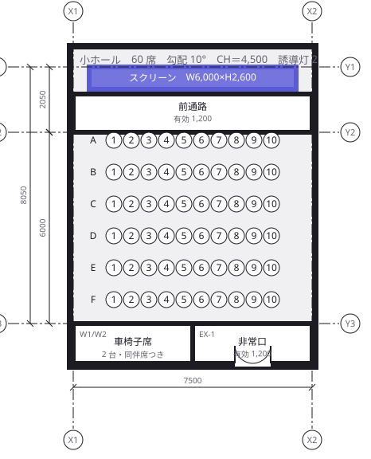
Seating plan, sixty seats and two wheelchair spacesFuneral hall: the seating is the order of offeringGravestone engraving: the living are cut in redExhibition hall layoutStatutory heir chart: the bottom 5 cm is left for the registry stampPolling station: three ballots, so nobody may double backCourtroom: where you sit is what you areFacility opening hours, by the weekBingo night running orderUsed car appraisal: a body map and the deduction codesCollision scene: every dimension from one datumFamily tree for probate: marriage doubled, descent singlePatent drawings have rules of their ownAn animal mark from circles aloneIcon keylines: what is matched is the size the eye seesLaying out a family crest with compass divisionsA real logo with no coordinates in the source (5.4 KB)Logo construction from compass and straightedgeMixing scripts: two typographies with different baselines
UI and screen design7
Product page structure, desktop against mobileAdmin screen: sidebar becomes a drawerLanding page where sections appear and disappearMobile app with a bottom navigationScreen flow with the wireframes drawn inCheckout flow, five steps and where errors return toCRUD admin flow: delete goes through a confirmation
IT and software10
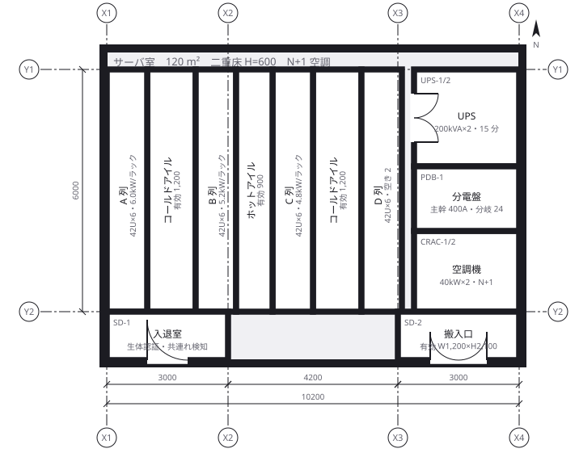
Data centre rack elevationEntity relationships
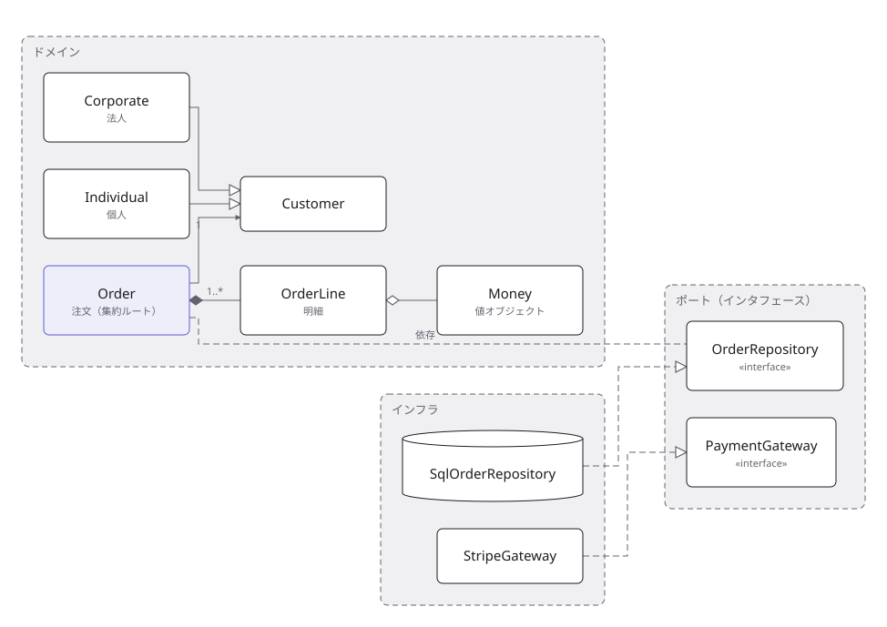
Class diagram (UML)
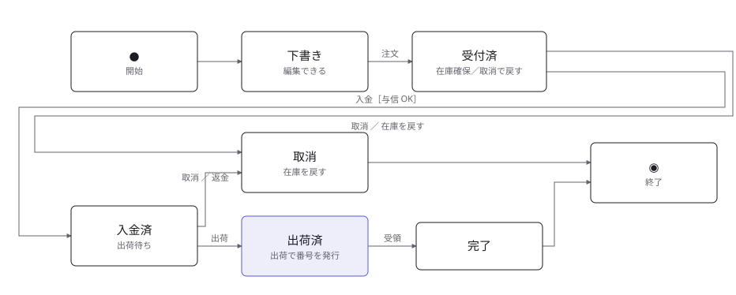
State machine (UML)
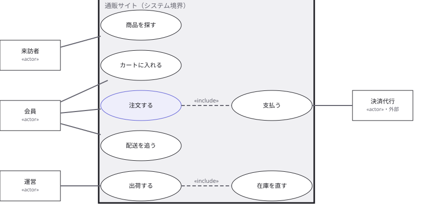
Use case diagram (UML)
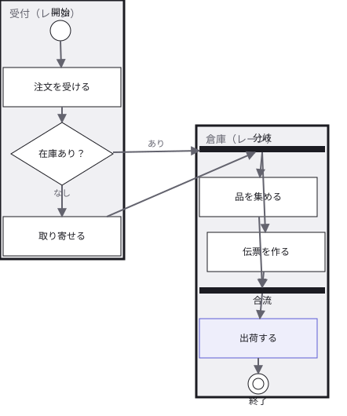
Activity diagram (UML)Cloud architectureOn-premise server layoutData flowNetwork layout
Transit and transport21
The seat count is not what fits - it is what the exits allow
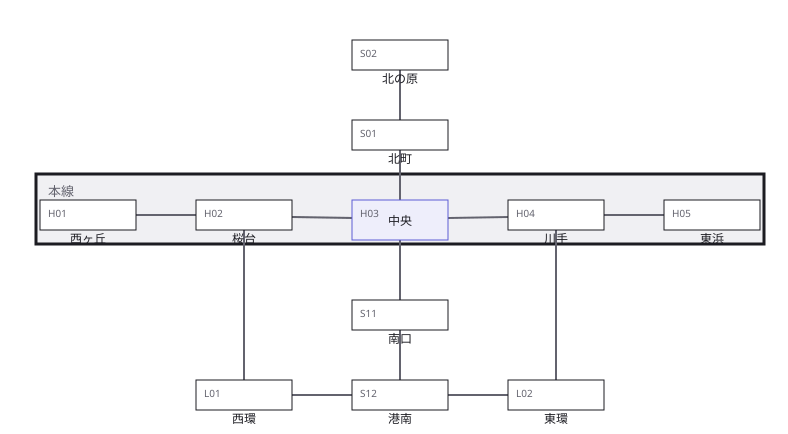
Transit mapTokyo's loop line (30 stations)Tokyo subway, 13 lines on one mapSeven stations all called Umeda, and the walk between themWhich trains stop where, weekday and weekendStopping pattern chart: a band per service, a circle per stopInterchange guide with station names set verticallyStation timetable (weekday / weekend)
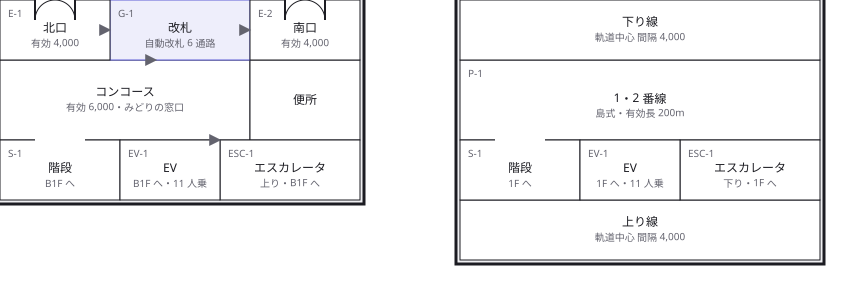
Station plan, two levelsInterchange across three levels, with the vertical movesTrack layout: two islands, four roads, passing possibleTrain graph: time against distanceBlock sections and signal aspects, counted back from the train ahead
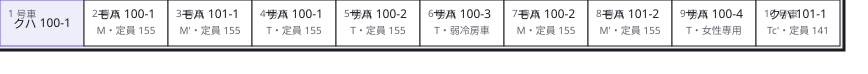
Train formation, ten carsBus stop timetableFerry sailings, with the routesHiking times against elevationDrone flight plan and the area kept clear of peopleRoad alignment with curves
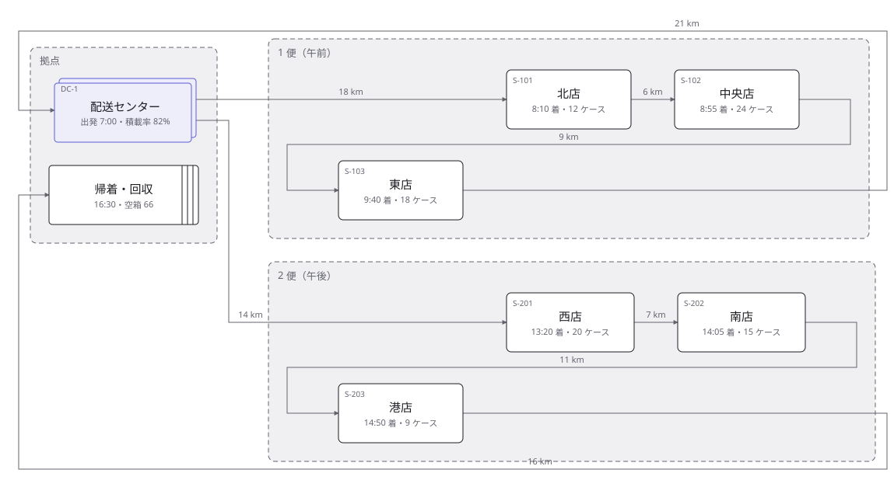
Delivery rounds for three vans
24 of the 170 drawings are
lettered in English; the rest are in Japanese. The notation does not change with the
language — both use exactly the same eleven words.
Every sample is drawn from a .zumen.yaml in
examples/gallery.
The source of truth is readable text
version: 1
title: On-premise server layout
nodes:
- id: httpd
type: server
label: Apache httpd
technology: 2.4 / mod_php
- id: db
type: database
label: MariaDB
edges:
- from: httpd
to: db
Git shows the diff. Review tells you who added what.
type becomes a shape, so it still reads in black and white and at small
sizes — a cylinder is a database, a hexagon is a cache, a cloud is the outside world.
Dimensions are measured from the grid lines only. Measured from the rooms they would
change depending on which side of the wall you count, and the site would disagree with the
drawing — real drawings use grid lines to make that single-valued.
No scale, no figures. Writing numbers at a scale you do not know is
worse than writing none.
The scale also chooses the units:{ mm: 40 } gives
14,000, { in: 1.5 } gives 46'-0".
Watch one grow
zumen made this of itself, from the source of each step (pnpm timelapse).
No screen recording — an animated SVG, 143 KB, 12 KB over the wire.
It competes on the second drawing
1. Ask in wordsAn AI that knows your architecture draws it
2. A diagram appearsPlacement and routing are automatic. You choose nothing
3. You fix one thingMove the box that bothers you. That is all
4. The architecture changesAsk again. The box you moved stays put
A human's edit is written only to pins in the source, and the AI cannot write
there. The tool closes that door, so it does not depend on policy or a note in the prompt.
Tried ten times with a real AI: the edit survived all ten.
Thirteen MCP tools. An agent that already knows your architecture can draw it.
Call zumen_inspect afterwards and you get crossing edges, overlapping boxes,
labels that were dropped because they did not fit, whether it is legible on a
projector, and whether a human has looked at it yet.
zumen_timelapse films a drawing growing — no screen recording, so it also
works on a machine nobody is sitting at.
Some doors are deliberately shut — resolving conflicts, writing pins, and
marking a drawing as reviewed. Open them and the AI could approve its own drawing.
What it will not do
It does not chase a shape library. The vocabulary stays small
It does not place things for you in scaled drawings. Where something sits is the author's decision when dimensions carry meaning
It ships no vendor logos. An AWS icon reads as “this runs on AWS”, which makes it useless for your own hardware
It does not finish without you. Keeping the human in the loop is the point, not a limitation
Try it
This is alpha. The builds are unsigned, so your machine will warn you
(macOS says “damaged”, Windows says “protected your PC”).
Do not make it your daily tool yet. A plain executable you can drop anywhere ships too.